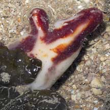
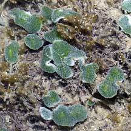
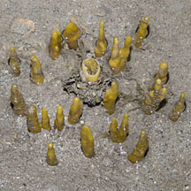

|
|
| index of concepts |
| Animal,
Vegetable or Mineral? and their roles in the cycles of life updated Dec 2019
You may come across things on the shores that appear strange and unfamiliar. Sometimes, it is not even obvious whether they are animals, plants or something non-living. All of them play a part in life on our shores. How are plants different from animals? Most plants make their own food through photosynthesis, a process that uses energy from the sun to create food from simple chemicals. Plants are called producers because they make their own food. Animals are called consumers because they can only take food from the environment. Animals eat plants and other animals. Are non-living things important? Plants and animals take in non-living things as part of their life processes. Some important non-living things include gases, such as oxygen, and minerals, such as calcium. Useful dead: Plants and animals contribute to the ecosystem even after they die. Their bodies decay and break down into smaller pieces or simpler substances that are eaten or absorbed by living things in the ecosystem. Some living things in fact get food by breaking down the remains of dead plants and animals into simpler substances. These are called decomposers. Bacteria are decomposers. Every little thing counts: Living and non-living things on our shores are so closely interconnected that removing a living thing or some natural material could upset this balance. For example, taking shells away from our shores not only deprives hermit crabs of homes but also removes a source of calcium. Calcium is needed by many animals to build shells and skeletons. The human hand is not needed to maintain these cycles of life; in fact, our intervention often sabotages it. Why are lifeforms on the shores so weird? Living things in the sea have had to adapt to conditions that are different from those that live on land. Thus, sea creatures not only appear strange but also behave strangely to us land dwellers. For example, the seawater that surrounds marine dwellers supports their body weight so they can take on shapes and sizes not often found on land. Seawater is also much like a soup of living things. Drifting in the water are countless plankton. Many marine creature simply filter this soup for food. To do so, they have body structures and feeding methods that may appear unusual to us. |
| Can you guess whether these are animals, plants or non-living things? |
 answer |
 answer |
 answer |